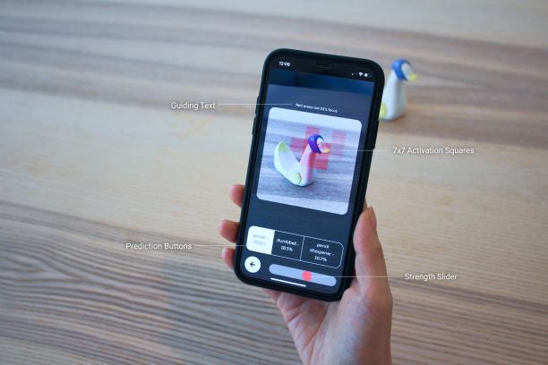
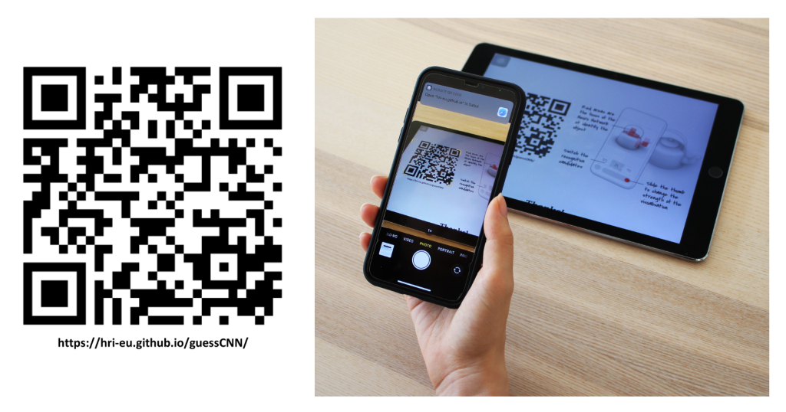
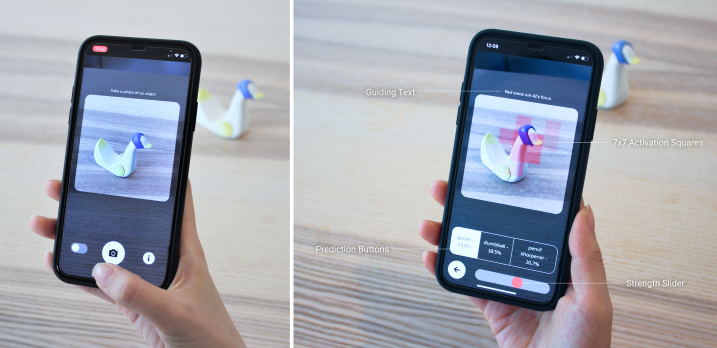
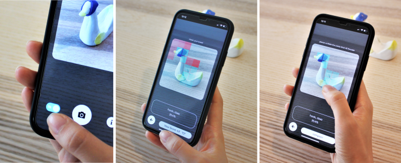
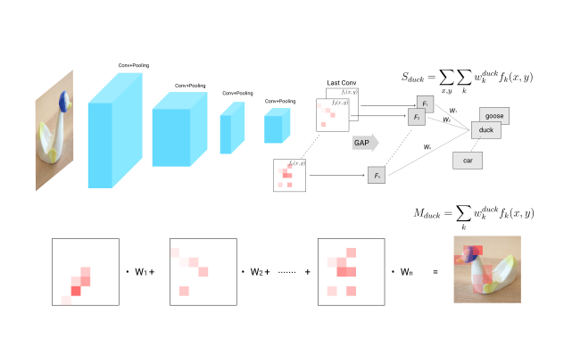
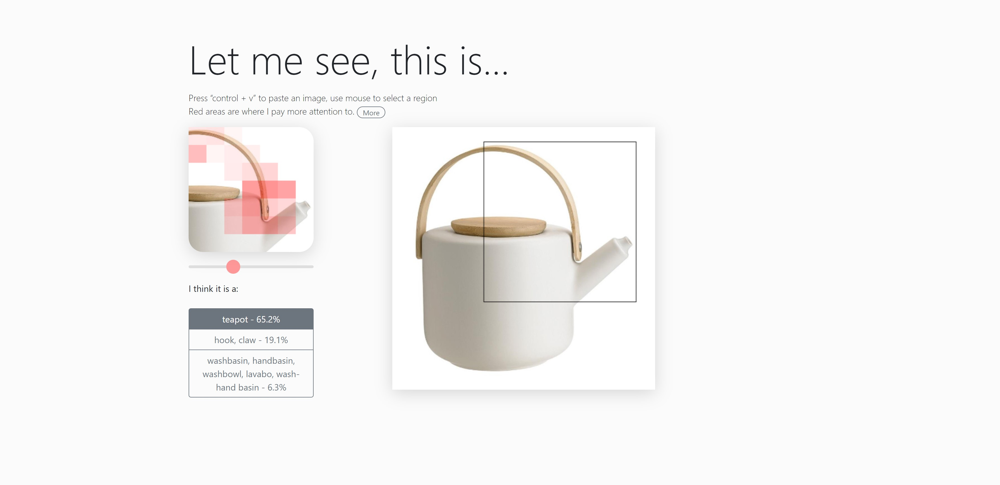

What is on CNN's mind?
How to visualize the attention of AI? Here we introduce the class activation map, which is a technique for generating class activation maps using the global average pooling (GAP). A class activation map for a particular category indicates the discriminative image regions used by the CNN to identify that category.
Please scan the QR code to try the APP! (Web-based app, No need to download):
Take a photo of any object you like, and compare if you and AI focus on the same area to identify it.
Comparing the difference between your focus and AI's
Visualizing discriminative regions with Class Activation Mapping:
fk(x, y) represents the activation of unit k in the last convolutional layer at spatial location (x, y). Fk is the result of performing global average pooling for the unit k. Then, for a certain prediction result, w1, w2 …wn are the weights for Fk to calculate the softmax input S (e.g., Sduck). As Fk comes from the global averaged pooling, the corresponding weight also indicates the importance of unit k. Thus, the aggregated heatmap (Mduck) reflects the activation of the last convolutional layer, hence indicating the most important regions (red squares) that have made the CNN to output a certain prediction result (e.g., duck).
And here is the desktop version:
If you are using desktop, go to this website, then Press “control + v” to paste an image from any source, and see where AI pays more attention to.